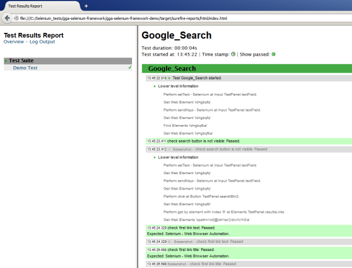

GGA Selenium Framework is a Java library developed for test automation using Selenium WebDriver. It is based on Maven structure and integrates with the TestNG testing framework. The GGA Selenium Framework provides rapid test automation for Web applications and allows focusing on substantial test development instead of tiresome testware maintenance.
Change the pom.xml file of Maven project:
Add the following dependencies:
<dependency>
<groupId>org.seleniumhq.selenium</groupId>
<artifactId>selenium-java</artifactId>
<version>2.42.2</version>
</dependency>
<dependency>
<groupId>com.ggasoftware.uitest</groupId>
<artifactId>gga-selenium-framework-core</artifactId>
<version>1.0</version>
</dependency>
Add the XML suit file and listener to the maven-surefire-plugin configuration:
<suiteXmlFiles>
<suiteXmlFile>src/test/resources/${testng_xml}</suiteXmlFile>
</suiteXmlFiles>
<property>
<name>listener</name>
<value>com.ggasoftware.uitest.utils.InvokedMethodListener,
org.uncommons.reportng.mod.HTMLReporter</value>
</property>
Create base class that extends the TestBaseWebDriver class with TestNG annotations:
@BeforeTest
public void setUp() throws MalformedURLException {
setBrowserType("firefox");
initWebDriver();
WebDriverWrapper.open("https://www.google.com");
}
@AfterTest
public void quit() {
WebDriverWrapper.quit();
}
“Firefox” is the default browser for WebDriver. For using different browsers, please, download appropriate drivers (Download Selenium) and add environment variables.
For project base class it could be like:
System.setProperty("webdriver.chrome.driver", chromeDriverPath);
System.setProperty("webdriver.ie.driver", ieDriverPath);
For using AutoIt library, please, download AutoItX3.dll (AutoIt Downloads) and add environment variable.
For project base class it is:
System.setProperty("AutoItX3.dll.path", autoItDllPath));
Use standard TestNG plugin commands: run or debug for running a specific test.
Use Maven lifecycle command test for running the test suit and creating the HTML report.
Use command line for running a test suit: mvn.bat clean test
You can try simple demo project here and demo project to run tests using Cucumber tool here.

Look at the GitHub page for getting sources.
GGA Selenium Framework is free software. You can redistribute it and/or modify it under the terms of the GNU General Public License as published by the Free Software Foundation; version 3 of the License.
This program is distributed WITHOUT ANY WARRANTY; without even the implied warranty of MERCHANTABILITY or FITNESS FOR A PARTICULAR PURPOSE. See the GNU General Public License for more details.
You should receive a copy of the GNU General Public License along with this program. If you did not, please see http://www.gnu.org/licenses/.